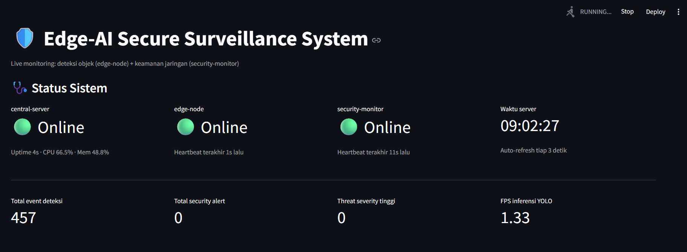
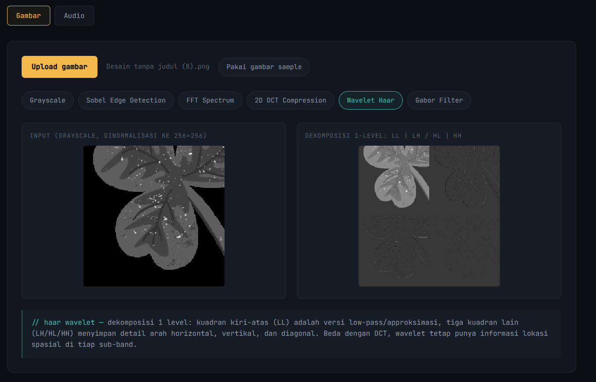
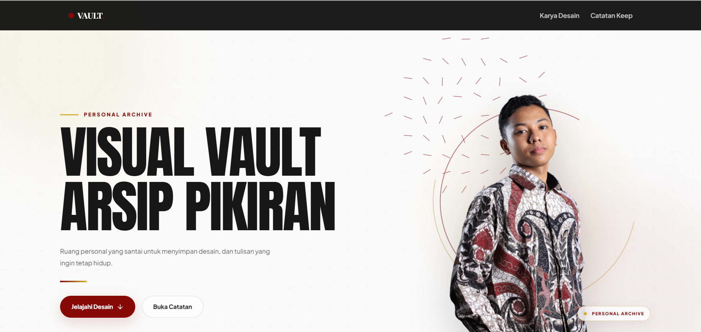

Membangun sistem yang melihat dan mengawasi jaringannya sendiri.
Dzakwan Naufal mahasiswa Teknik Komputer yang membangun deteksi objek edge AI dan sistem keamanan jaringan, dari model sampai deployment berkontainer, lengkap dengan analisis kegagalan yang jujur.
Statistik repo, diambil langsung — bukan angka statis
edge-ai-secure-surveillance
—Stars
—Commit terakhir
memuat…
smart-parking-detection
—Stars
—Commit terakhir
memuat…
fale2323.github.io
—Stars
—Commit terakhir
memuat…
Tentang
Dua sisi dari satu masalah: melihat, lalu mengamankan.
Saya mempelajari hubungan komputer dan sistemnya dengan fokus di pemrosesan sinyal digital, pemrosesan citra, jaringan komputer, dan arsitektur komputer lalu memilih untuk menghubungkan semuanya lewat proyek nyata, bukan cuma tugas kuliah.
Pola kerja saya: bangun sesuatu yang benar-benar jalan end-to-end, lalu dokumentasikan dengan jujur termasuk bagian yang gagal dan kenapa. Setiap proyek di bawah punya bagian root cause yang menjelaskan limitasi nyata, bukan cuma daftar fitur yang berhasil.
Computer Vision
YOLOv8
OpenCV
ONNX
Model benchmarking
Networking & Security
Scapy
Wireshark
TLS/SSL inspection
Threat intel (Feodo Tracker)
Cisco Packet Tracer
GNS3
Deployment
Docker
FastAPI
Streamlit
Proyek
Dari deteksi objek ke pengawasan jaringan real-time
Edge-AI Secure Surveillance Systemv2
Capstone integrasi computer vision & keamanan jaringan
3
service berjalan bersamaan

Edge node menjalankan YOLOv8n untuk deteksi objek dan mengirim hasilnya lewat HTTPS ke central server
sementara service terpisah menyadap trafik jaringan itu sendiri: inspeksi TLS ClientHello, cross-reference
IP terhadap blocklist botnet C2, dan rule berbasis SNI. Bukan CV yang mendeteksi ancaman sistem keamanan
yang mengawasi dunia fisik dan jalur komunikasinya sekaligus.
Kenapa HTTPS (self-signed), bukan HTTP polos, antar service?
Supaya security-monitor punya trafik TLS asli untuk diinspeksi ClientHello, cipher suite, SNI — bukan simulasi. Trade-off: perlu setup sertifikat self-signed dan security-monitor harus bisa membaca ClientHello tanpa decrypt isi payload-nya.
Kenapa topologi disimulasikan sebagai 2 mesin terpisah, bukan localhost?
Trafik antar container lewat Docker network jauh lebih realistis untuk disadap dibanding komunikasi dalam satu proses/localhost — supaya network_monitor.py benar-benar menangkap paket TCP/TLS sungguhan, bukan loopback yang perilakunya berbeda.
Kenapa status container di dashboard pakai heartbeat, bukan Docker socket?
Akses ke /var/run/docker.sock butuh privilege tambahan dan mengubah arsitektur container (mount socket = permukaan serangan lebih besar). Heartbeat self-report tiap service ke central-server cukup untuk menunjukkan status online/stale tanpa privilege ekstra.
Kenapa simulasi threat default OFF dan selalu berlabel "SIMULATED"?
Fitur demo (SIMULATE_THREATS) sengaja dibuat eksplisit dan tidak pernah menyamar sebagai temuan asli — bahkan di file log. Prioritasnya: dashboard tidak boleh pernah menyesatkan soal apa yang beneran terdeteksi vs apa yang cuma demo.
Root Cause & Limitasi
// root cause inspeksi sertifikat gagal untuk sertifikat besar yang terfragmentasi lintas beberapa paket TCP, karena Scapy dipakai tanpa TCP stream reassembly. Didokumentasikan sebagai limitasi, bukan disembunyikan.
// root cause rule "SNI mencurigakan" pakai heuristik entropy Shannon — bisa false-positive pada subdomain CDN yang memang random-looking. Severity sengaja diset medium, bukan high, untuk mencerminkan ketidakpastian itu.
v2 menambahkan: logging berjenjang dengan rotasi, statistik operasional real-time (paket, TLS, FPS, uptime),
dashboard dengan grafik & status per-service, dua rule keamanan baru, retry/backoff untuk semua koneksi antar-service —
tanpa mengubah arsitektur yang sudah berjalan.
Hasil Terukur
100% andal pada testing TLS ClientHello terhadap badssl.com, expired.badssl.com, tls-v1-0.badssl.com
0 false positive rule domain-blacklist/SNI saat trafik legit (google-analytics.com) terekam live
Seluruh endpoint API & rule keamanan lolos automated testing sebelum deploy
🖼Screenshot belum diupload otomatis muncul begitu file ditambahkanassets/smart-parking/hero.png
Model YOLOv8n dilatih untuk mendeteksi kendaraan pada citra area parkir, dibungkus sebagai endpoint FastAPI
/predict, dikontainerisasi dengan Docker,
dan ditampilkan lewat dashboard Streamlit. Sempat dibenchmark ke format ONNX, tapi akhirnya deployment
native .pt dipilih berdasarkan hasil pengukuran, bukan asumsi.
Arsitektur
Client / gambar upload→ POST /predict →FastAPI (Docker)→ inferensi →YOLOv8n (.pt)→Dashboard Streamlit
Tech Stack
YOLOv8nFastAPIDockerStreamlitONNX (dievaluasi)
Keputusan Teknis
Kenapa akhirnya native .pt, padahal sudah benchmark ONNX?
ONNX dievaluasi untuk potensi speedup inferensi, tapi hasil benchmark menunjukkan overhead konversi tidak sebanding dengan gain di skala penggunaan proyek ini. Keputusan diambil dari data pengukuran, bukan asumsi bahwa "ONNX pasti lebih cepat".
Kenapa FastAPI, bukan Flask?
Validasi request otomatis lewat Pydantic dan dukungan async bawaan pola yang sama juga dipakai lagi di central-server pada proyek capstone, jadi konsisten di seluruh portfolio.
Root Cause & Limitasi
// root cause model gagal mendeteksi individual kendaraan pada foto wide-shot dengan banyak kendaraan kecil. Bukan soal sudut kamera — akar masalahnya adalah skala objek relatif terhadap ukuran frame.
Hasil Terukur
98.5% mAP50 pada validation set
Endpoint FastAPI terverifikasi jalan end-to-end di dalam container Docker
Tool interaktif transform domain frekuensi dijalankan langsung di browser
0
dependency backend

🖼Screenshot belum diupload otomatis muncul begitu file ditambahkanassets/dsp/hero.png
Delapan transform sinyal klasik Sobel, FFT 2D, DCT (gaya kompresi JPEG), wavelet Haar, Gabor filter (domain gambar),
plus FIR low-pass, Wiener denoising, dan analisis spectral leakage (domain audio) diimplementasikan dari nol
di JavaScript murni, tanpa memanggil library DSP siap pakai. Semua perhitungan jalan client-side, jadi bisa
dicoba langsung tanpa install apa pun.
Arsitektur
Upload gambar/audio→Canvas API / Web Audio API→Transform (FFT/DCT/Wavelet/Gabor/FIR/Wiener)→Render hasil (100% client-side)
Kenapa implementasi manual, bukan pakai library DSP?
Supaya bisa jalan 100% client-side tanpa backend (bisa langsung di-host di GitHub Pages sebagai live demo), dan supaya pemahaman matematikanya bisa dibuktikan langsung dari kode bukan cuma "saya tahu cara pakai library X".
Kenapa panjang buffer di-fix (256×256 gambar, 8192 sample audio)?
Radix-2 FFT butuh panjang input pangkat 2. Trade-off-nya: gambar/audio besar otomatis di-downsample ke ukuran kerja tetap, demi performa yang konsisten di semua device bukan performa terbaik untuk file besar.
Kenapa Wiener denoising versi "global", bukan adaptif per-frame (STFT)?
Wiener filter adaptif per-frame (overlap-add STFT) jauh lebih kompleks untuk didemokan interaktif di browser. Versi global (satu estimasi noise floor untuk seluruh sinyal) cukup untuk menunjukkan prinsipnya limitasinya didokumentasikan eksplisit, bukan disamarkan seolah setara software profesional.
Root Cause & Limitasi
// root cause menurunkan jumlah koefisien DCT yang disimpan memunculkan blocking artifact tepat di batas blok 8×8 bukan bug, itu konsekuensi matematis membuang koefisien frekuensi tinggi per blok secara independen. Sengaja dibuat interaktif (slider) supaya efeknya terlihat langsung, bukan cuma dijelaskan di teks.
// root cause Wiener denoising memakai satu estimasi noise floor global (median magnitude spektrum), bukan adaptif per-frame tidak akan menangani noise yang berubah-ubah sepanjang waktu.
Hasil Terukur
FFT custom vs direct DFT: error 0.00000000 (radix-2 tervalidasi exact)
FIR low-pass: atenuasi stopband 3675× relatif terhadap passband
Galeri catatan pribadi yang ditarik langsung dari Google Keep
0
biaya hosting backend

🖼Screenshot belum diupload otomatis muncul begitu file ditambahkanassets/vault/hero.png
Galeri pribadi yang menarik catatan langsung dari Google Keep lewat Google Apps Script sebagai backend,
lalu dirender sebagai kartu masonry di frontend. Dibuat untuk jadi tempat berkembang seiring waktu — jumlah
catatan terus bertambah, jadi layout-nya dirancang tetap enak dilihat tanpa perlu di-redesign ulang tiap kali
isinya nambah.
Google Apps ScriptGoogle Keep APIVanilla JSTailwind CSSCSS Masonry (columns)No dedicated server
Keputusan Teknis
Kenapa Google Apps Script sebagai backend, bukan server sendiri?
Apps Script bisa langsung baca Google Keep tanpa server terpisah, tanpa biaya hosting, dan cukup untuk trafik personal. Trade-off-nya: cold start lebih lambat dibanding backend dedicated, tapi cocok untuk skala proyek portofolio.
Kenapa masonry (CSS columns) bukan grid rata seperti sebelumnya?
Grid dengan tinggi baris seragam bikin semua kartu terlihat monoton begitu jumlah catatan bertambah banyak. CSS columns bikin tinggi kartu mengikuti panjang isi masing-masing catatan, jadi tetap enak dipindai walau kontennya terus tumbuh.
Root Cause & Limitasi
// root cause CSS columns menyusun kartu per-kolom (atas ke bawah, baru pindah kolom), bukan urutan baca kiri-ke-kanan seperti masonry berbasis JS (mis. Masonry.js) sengaja dipilih karena tanpa dependency tambahan, trade-off-nya urutan visual tidak selalu 100% kronologis.